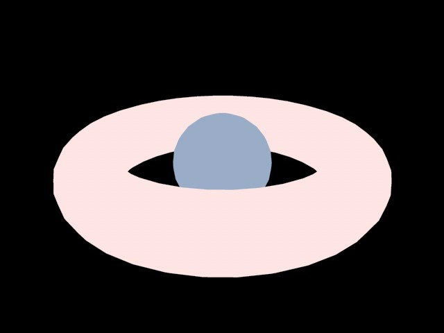
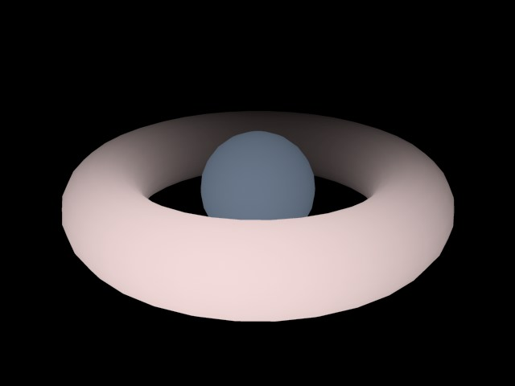

General
You can adjust the color of each of your lights using the slider controls and the text input boxes for each color element (RGB). You may change the color system (perhaps to HSV 0 … 255) using the drop-down list below the Color box.
It is also possible to use the color sliders to achieve negative lighting effects, which is discussed in detail later in this chapter.
Use Temperature
Color Temperature [1000..10000]
The light color can be defined vie the Color Temperature (click on the small arrow at the left of the Color option) value, instead of using the RGB slider, when the Use Temperature option is enabled (see also White Balance (K)).
Note that this setting (contrary to the color chooser’s Kelvin temperature, which only interpolates and animates between RGB values internally) can be animated correctly.
Intensity [-10000000..10000000%]
This value controls the overall brightness of the light source. While this control may be seen as just a way to brighten or dim your light source, it’s also capable of another interesting, and very useful, effect. Using a negative value with this option results in negative lighting. The color of your light source is important here. That color will not be added to the scene where a negative light source is in effect. With this technique you can artificially darken and shade specific areas of your scene.
You can define how brightly a given light source should shine, regardless of its color. You can simulate anything from dim candlelight to bright sunlight. Values far beyond the 100% mark can also be entered.
This type of lighting works even better when used with carefully constructed environment lighting and falloff ranges. A good understanding of environment lighting is needed.
Defines the light’s type.
An Omni light source acts like a real life light bulb — casting rays in all directions. Placing an Omni light in the center of your scene will illuminate your scene evenly.
Spotlights cast their rays in just one direction, which is along the Z axis by default. Once created, they can be easily moved and rotated to light individual objects and specific areas of a scene. The spotlight source can project a round or a square cone of light.
Square light cones are ideal for, amongst other things, the simulation of that which require a square picture to be cast onto a wall.
Examples of round spotlights include car headlights and torches.
The Infinite light type is so called because it mimics light that is cast from an infinite distance. Using a Infinite light would, for example, evenly illuminate the whole of a floor (provided the floor is flat). Since a Infinite light is infinite, the light has no actual origin. Thus the exact position of a Infinite light, near or far, has no effect on your scene’s objects. Only the actual direction in which the light is facing is important with this light source.
Infinite light sources are suitable for simulating sunlight.
The light rays from an Area light expand from all points on its surface outwards in all directions.
A rectangular computer screen is a good example of such a light.
The resultant lighting and specular effects are somewhat different from those of an Omni light; specular highlights are more angular and the surface illumination is richer. The closer the light source is to the object, the more apparent this becomes.
Improved Area Light Object
The corresponding Area shadows behave in accordance with the Area light object .
As you can see in the images above, the rectangular Area light on the right (regulated with the use of Falloff Angle) emulates very accurately light cast through a window.
The above scene was lit using one Omni light, an Area light with Area shadow, and rendered using Ambient Occlusion (Advanced Render). The Area light is rectangular and was placed in the window opening.
Parallel lights resemble the Infinite light. Unlike the Distant light source however, the Parallel light has an origin and simulates a large, single axis wall of light. By default, all Parallel lights will radiate light rays along the Z axis. These lights take the appearance of an infinitely large surface, radiating parallel light in a single direction; anything behind the point of origin will not be illuminated.
Parallel Spot
Square Parallel Spot
Parallel spotlights resemble the regular spotlight but do not have light cones to define falloff or distance. Instead, light rays are cast along cylinders and/or bars. The origin is important in defining which objects in a scene will be affected by this light. The radius of the spotlight can also be modified using the adjustment handles.
See Photometric tab, in which an IES file must be loaded.
Defines the type of shadow generated by a light source.
Select None if your light is to cast no shadow. This is a very helpful option in a scene with many lights, allowing you to turn on shadow-casting for the main lights only. Any real world photographer will envy you this option and its possibilities.
Render Time (overview)
- Soft shadows are calculated far more quickly than hard shadows, hard shadows being much faster to calculate than area shadows.
- Making a light visible in a rendered scene adds a negligible amount to its render time. Using a volumetric light increases render time, sometimes substantially, according to the Sample Distance.
- Noise adds to render time, with hard and soft turbulence requiring more calculations than basic noise, while wavy turbulence roughly doubles rendering time over that of basic noise.
- Using a high sample radius will increase the render time of soft shadows.
- Area lights also add to render time, although not to the same extent as the processor intensive volumetric light.
Defines the visibility of the light in a scene. This type of effect can be seen in a smoky room.
This effect is comparable to fog, which does not diminish light, but rather adds to its brightness.
With Visible Light, you can produce stunning effects including headlights, shimmering lights, laser beams and a host of atmospheric effects.
In nature, a light beam becomes visible when small particles such as dust, insects, smoke or fog are present in the air. For example, if a car headlight shines in fog, you will see its cone of light quite distinctly. In Cinema 4D, all light sources and/or the light cone emitted can be made visible.
If Visible Light is set to Visible on the General page, the light source will produce visible light that passes through all objects. For example, a visible light could be placed in the center of a planet’s sphere to simulate an atmosphere.
The Visible option is of special importance to the particle system. Visible lights (with No Light Radiation enabled) lend themselves to a huge range of effects, such as nebula clouds, smoke, comet tails, fire and flames.
A visible light does not affect objects that lie in its cone of light — the light rays penetrate objects unhindered, casting no shadow in the visible light’s beam.
In order for a shadow to be cast by a visible light, volumetric lighting must be used.
The parameters for the visible Volumetric light are taken from the light source’s shadow map values: Resolution X, Resolution Y, Sample Radius and Parallel Width.
Enabling the Inverse Volumetric function has the interesting effect of inverting your volumetric light — that is, the light is visible where the light cone would normally be in shadow.
Imagine a company logo, behind which you have placed an Inverse Volumetric light source. This inverts the light’s volumetric effect, giving the impression that the light is radiating from the logo itself.
If you need to see just the visible light and/or its lens effects without the light source actually illuminating objects, enable this option. Should you need your light sources for special effects (such as the exhaust gas of a jet engine) enable this box for faster rendering.
If this option is enabled, a wireframe approximation of the light’s illumination is shown in the viewports. This range can be adjusted by dragging the handles of the wireframe representation.
Normally the brightness of a surface is determined by the angle at which a ray of light hits it. The greater the angle between the ray and a tangent to the surface, the more the surface will be lit by the light. When Ambient Illumination is switched on, however, this physical law is waived. Here the angle does not matter. All surfaces are lit with the same intensity. This results in a much flatter look. Only the material color is considered in the lighting calculations.
Ambient illumination. |
Ambient illumination with Falloff enabled. |
With both Ambient Illumination and Falloff enabled for the light source, you can lighten specific regions of your scene in a similar way to how you darken them with Negative Lighting, explained earlier.
Enable this option to show an approximation of the visible light in the viewports, not to be confused with illumination. Again, this range can be interactively adjusted via its handles.
When Diffuse is enabled, the color properties of an object are ignored by the light source; only specular surfacing is produced by the light. This can be useful for objects such as a golden signature, where you would like specular glints, but no lightening of the color properties.
Diffuse disabled. |
Diffuse enabled. |
Enabling this option shows an approximation of the selected light’s clipping range (the restriction of the light range) in the viewports and can be interactively adjusted with the wireframe’s handles.
When this option is enabled, the light source produces no specular highlights on your scene’s objects. Imagine you have a bottle on a table with two or more light sources in the scene. The bottle may show too many specular highlights, with the glass material looking too busy. To avoid this, enable No Specular for some of the light sources.
If you enable this option, separate diffuse, specular and shadow layers will be created for the light source when you render (provided you have set the appropriate multi-pass parameters).
Use this setting to define if objects illuminated by a given light source should "pass on" their light with regard to GI. If this option is disabled this light source’s illumination will affect objects (they will be illuminated) but these objects will not reflect light onto any other object(s).
After Effects: Note that this option is designed for use in conjunction with exchange described in point 2 above.
If enabled, the light source will be exported to a compositing application (see also here).